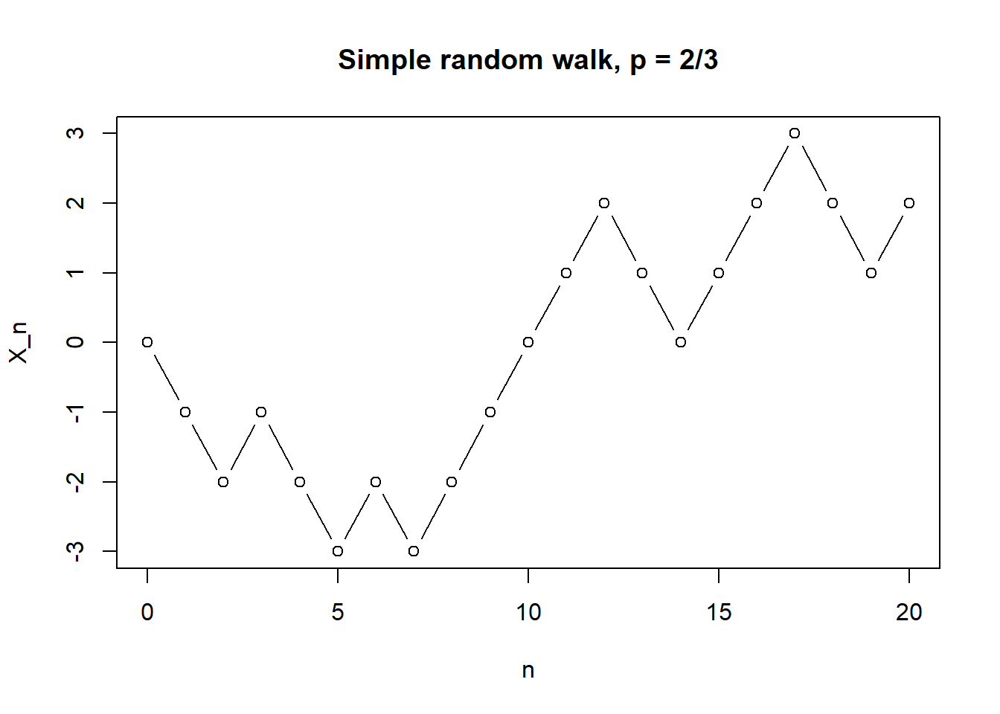
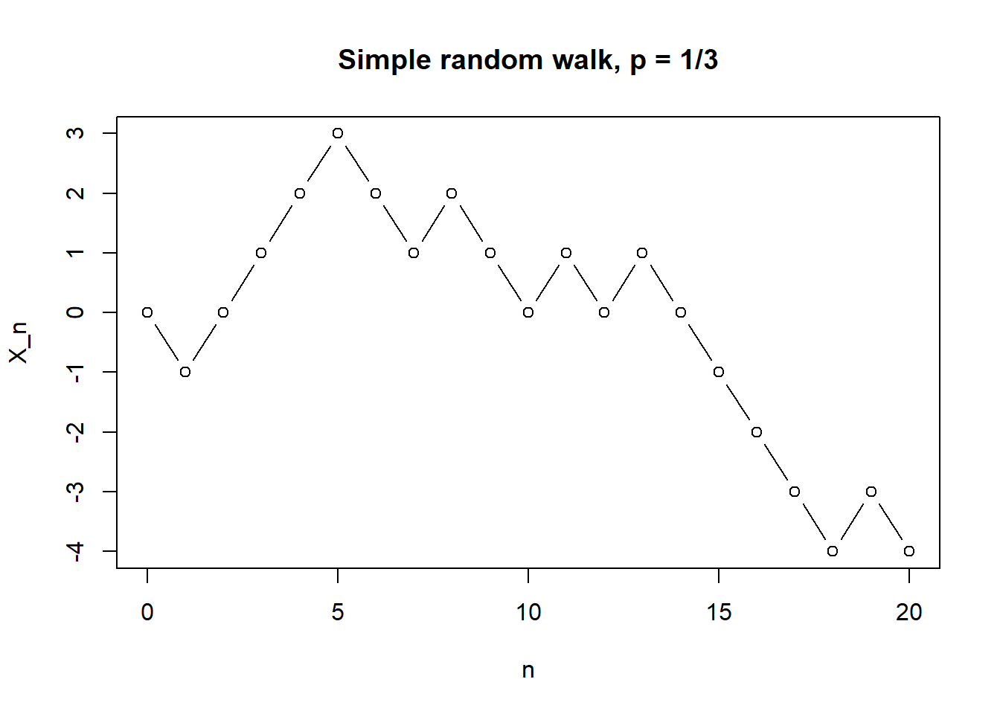

2 Random walk
- Definition of the simple random walk and the exact binomial distribution
- Expectation and variance of general random walks
2.1 Simple random walk
Consider the following simple random walk on the integers \(\mathbb Z\): We start at \(0\), then at each time-step, we go up by one with probability \(p\) and down by one with probability \(q = 1-p\). When \(p = q= 1/2\), we’re equally as likely to go up as down, and call this the simple symmetric random walk.
The simple random walk can be used as simplified model for lots of processes, like stock prices, sizes of populations, or positions of gas particles. (In most modern models, however, these have been replaced by more complicated continuous time and space models.) The simple random walk is sometimes called the `drunkard’s walk’, suggesting it could model a drunk person trying to stagger home.
Z <- rbinom(20,1,2/3)
Z <- 2*Z - 1
X <- c(0,cumsum(Z))
plot(0:20,X,xlab="n",ylab="X_n",main="Simple random walk, p = 2/3",type="b")
Z <- rbinom(20,1,1/3)
Z <- 2*Z - 1
X <- c(0,cumsum(Z))
plot(0:20,X,xlab="n",ylab="X_n",main="Simple random walk, p = 1/3",type="b")
We can write this as a stochastic process \((X_n)\) with discrete time \(n = \{0,1,2,\dots\} = \mathbb Z_+\) and discrete state space \(\mathcal S = \mathbb Z\), where \(X_0 = 0\) and, for \(n \geq 0\), we have \[ X_{n+1} = \begin{cases} X_n + 1 & \text{with probability $p$,} \\ X_n - 1 & \text{with probability $q$.} \end{cases} \]
It’s clear from this definition that \(X_{n+1}\) (the future) depends on \(X_n\) (the present), but, given \(X_n\), does not depend on \(X_{n-1}, X_{n-1}, \dots, X_0\) (the past). Thus the Markov property holds, and the simple random walk is a Markov process or Markov chain.
Example 2.1 What’s the probability that after two steps a simple random walk has reached \(X_2 = 2\)?
To achieve this, the walk must go upwards in both time steps, so \(\mathbb P(X_2 = 2) = pp = p^2\).Example 2.2 What’s the probability that after three steps a simple random walk has reached \(X_3 = -1\)?
There are three ways to reach \(-1\) after three steps: up–down–down, down–up–down, or down–down–up. So \[ \mathbb P(X_3 = -1) = pqq+qpq+qqp = 3pq^2 . \]2.2 General random walks
Note that alternative way to write the simple random walk is to put \[ X_n = X_0 + \sum_{i=1}^n Z_i , \qquad (*) \] where the starting point is \(X_0 = 0\) and the increments \(Z_1, Z_2, \dots\) are independent and identically distributed (IID) random variables with distribution given by \(\mathbb P(Z_i = 1) = p\) and \(\mathbb P(Z_i = -1) = q\). You can check that this means \(X_{n+1} = X_n + Z_{n+1}\), and that this property defines the simple random walk.
In fact, any stochastic process with the form \((*)\) for some \(X_0\) and some distribution for the \(Z_i\)s is called a random walk.
Random walks often have state space \(\mathcal S = \mathbb Z\), like the simple random walk, but they could be defined on other state spaces. We could look at higher dimensional simple random walks: in \(\mathbb Z^2\), for example, we could step up, down, left or right with given probabilities. We could even have a continuous state space like \(\mathbb R\), if, for example, the \(Z_i\)s had a normal distribution.
We can use this structure to calculate the expectation or variance of any random walk (including the simple random walk).
Let’s start with the expectation. For a random walk \((X_n)\) we have \[ \mathbb E X_n = \mathbb E \left(X_0 + \sum_{i=1}^n Z_i\right) = \mathbb E X_0 + \sum_{i=1}^n \mathbb E Z_i = \mathbb EX_0 + n \mathbb E Z_1 , \] where we’ve used the linearity of expectation, and that the \(Z_i\)s are identically distributed.
In the case of the simple random walk, we have \(\mathbb E X_0 = 0\), since we start from \(0\) with certainty, and \[ \mathbb E Z_1 = \sum_{z \in \mathbb Z} z \mathbb P(Z_1 = z) = 1\times p + (-1)\times q = p-q ,\] so \(\mathbb EX_n = n(p-q)\).
If \(p > 1/2\), then \(p > q\), so \(\mathbb E X_n\) grows ever bigger over time, while if \(p < 1/2\), then \(\mathbb E X_n\) grows ever smaller (that is, negative with larger absolute value) over time. If \(p = 1/2 = q\), which is the case of the simple symmetric random walk, then then the expectation \(\mathbb E X_n = 0\) is zero for all time.
Now the variance of a random walk. We have \[ {\mathrm{Var}}(X_n) = {\mathrm{Var}}\left(X_0 + \sum_{i=1}^n Z_i\right) = {\mathrm{Var}}X_0 + \sum_{i=1}^n {\mathrm{Var}}Z_i = {\mathrm{Var}}X_0 + n {\mathrm{Var}}Z_1 , \] where it was crucial that \(X_0\) and all the \(Z_i\)s were independent (so we had no covariance terms).
Again, for a simple random walk \({\mathrm{Var}}X_0 = 0\), since we always start from \(0\). To calculate the variance, we write \[\begin{align} \Var(Z_1) &= \mathbb E Z_1^2 - (\mathbb EZ_1)^2 \\ &= 1^2 \times p + (-1)^2 \times q - (p-q)^2 \\ &= p + q - (p-q)^2 \\ &= 1 - (2p - 1)^2 \\ &= 4p - 4p^2 \\ &= 4pq , \end{align}\]where we’ve used that \(q = 1-p\). Hence the variance of the simple random walk is \(4pqn\). Note that (unless \(p\) is \(0\) or \(1\)) the variance grows over time, so it becomes harder and harder to predict where the random walk will be.
The variance of the simple symmetric random walk is \(4 \frac12 \frac12 n = n\).
For large \(n\), we can use a normal approximation for a random walk. Suppose the increments process \((Z_n)\) has mean \(\mu\) and variance \(\sigma^2\), and that the walk starts from \(X_0 = 0\). Then we have \(\mathbb E X_n = \mu n\) and \({\mathrm{Var}}(X_n) = \sigma^2 n\), so for large \(n\) we can use the normal approximation \(X_n \approx \mathrm{N}(\mu n, \sigma^2 n)\). (Note, of course, that the \(X_n\) are not independent.) To be more formal, the central limit theorem tells us that, as \(n \to \infty\), we have \[ \frac{X_n - n\mu}{\sigma \sqrt{n}} \to \mathrm{N}(0,1) . \]
2.3 Exact distribution of the simple random walk
In the case of the simple random walk, we can in fact give the exact distribution by writing down a formula for \(\mathbb P(X_n = i)\) for any time \(n\) and state \(i\).
Recall that, at each of the first \(n\) times, we take an upward step with probability \(p\), and otherwise take a downward step. So if we let \(Y_n\) be the number of upward steps over the first \(n\) times, we see that \(Y_n\) has a binomial distribution \(Y \sim \text{Bin}(n,p)\).
Recall that the binomial distribution has probability \[ \mathbb P(Y_n = k) = \binom nk p^k (1-p)^{n-k} = \binom nk p^k q^{n-k} , \] for \(k = 0,1,\dots, n\), where \(\binom{n}{k}\) is a binomial coefficient `\(n\) choose \(k\)’.
If \(Y_n = k\), that means we’ve taken \(k\) upward steps and \(n-k\) downward steps, leaving us at position \(k - (n-k) = 2k - n\). Thus we have that \[ \mathbb P(X_n = 2k - n) = \mathbb P(Y_n = k) = \binom nk p^k q^{n-k} . \qquad (**) \]
Note that after an odd number of time steps \(n\) we’re always at an odd-numbered state, since \(2k - \text{odd} = \text{odd}\), while after an even number of time steps \(n\) we’re always at an even-numbered state, since \(2k - \text{even} = \text{even}\).
Writing \(i = 2k - n\), so \(k = (n+i)/2\) and \(n-k = (n-i)/2\), we can rearrange \((**)\) to see that the distribution for the simple random walk is \[ \mathbb P(X_n = i) = \binom{n}{(n+i)/2} p^{(n+i)/2} q^{n - (n+i)/2} = \binom{n}{(n+i)/2} p^{(n+i)/2} q^{(n-i)/2} , \] when \(n\) and \(i\) have the same parity with \(-n \leq i \leq n\), and is \(0\) otherwise.
In the special case of the simple symmetric random walk, we have \[ \mathbb P(X_n = i) = \binom{n}{(n+i)/2} \left(\frac12\right)^{(n+i)/2} \left(\frac12\right)^{(n-i)/2} = \binom{n}{(n+i)/2} 2^{-n} . \]